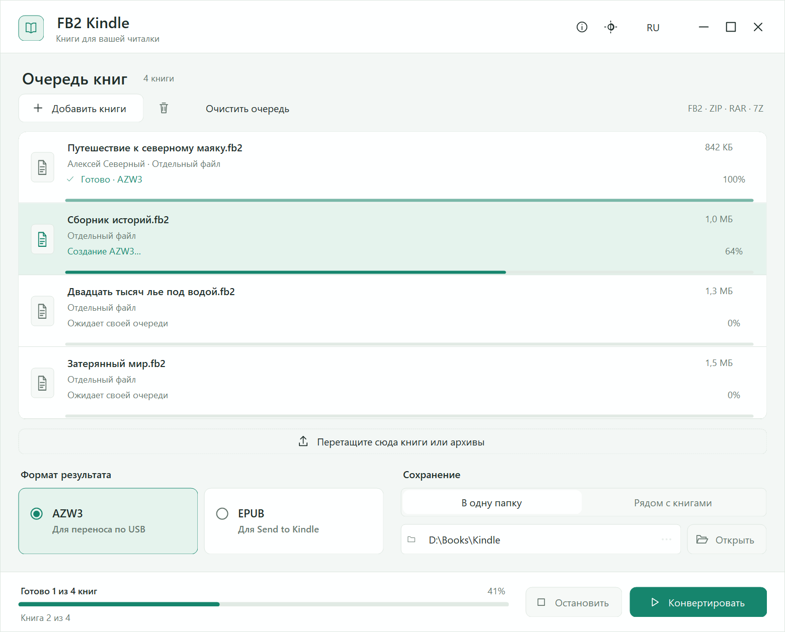

FB2 Kindle 1.3.0 · Windows
Из FB2 —
на вашу читалку.
Превратите FB2 и архивы с книгами в EPUB или AZW3. Понятная очередь, прогресс каждой книги и спокойный интерфейс MiraUI.
Windows 10 / 11 · x64 · .NET Framework 4.8

Интерфейс приложения · язык и тема меняются кнопками сверху
Три шага — и можно читать
- 01
Добавьте книги
Перетащите FB2, ZIP, RAR или 7Z. Каждая книга из архива появится отдельной строкой.
- 02
Выберите формат и папку
AZW3 для USB или EPUB для Send to Kindle. Сохраняйте рядом с исходниками либо в выбранную папку.
- 03
Запустите конвертацию
Следите за общим прогрессом и каждой книгой. Очередь сама покажет текущую обработку; её можно остановить.
Какой формат выбрать?
Зависит от того, как вы переносите книги. Обложка, оглавление, иллюстрации и сноски сохраняются при конвертации.
Программа сохраняет готовые файлы. Перенос по USB или отправку через сервис Amazon вы выполняете отдельно.
Ваши книги остаются у вас
Конвертация выполняется на компьютере. Приложение не загружает книги на сервер и не управляет подключённой читалкой. Движки уже включены в установщик, для работы интернет не нужен.
Требования и ограничения
Windows 10 или 11 x64 и .NET Framework 4.8. Одна FB2-книга — до 96 МиБ. Парольные архивы предварительно распакуйте. Некоторые именованные стили FB2 упрощаются; результат зависит от читалки и её прошивки. Перенос на физический Kindle и сервис Send to Kindle не тестировались.
Как устроена очередь
Общий и индивидуальный прогресс, автоматическая прокрутка к текущей книге и остановка обработки. Прокрутка внутри очереди появляется после семи книг. Существующие файлы не перезаписываются: одинаковые названия получают номера.
Исходники и лицензии
Собственный код и ресурсы — MIT. Установщик включает неизменённые Calibre 9.15.0 и 7-Zip 26.00 с их лицензиями, уведомлениями и соответствующими исходными архивами. Inno Setup сохраняет собственную лицензию. Подробнее о компонентах